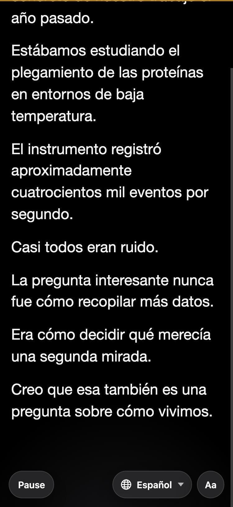
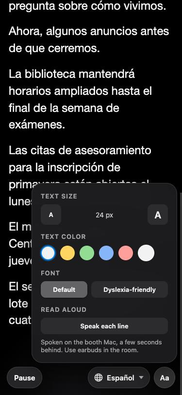

Free · open source · Mac app for the booth
Captions for the events that have none.
The speaker's words go on the wall, onto every phone in the room in the reader's own language, and into the stream. All of it runs on the Mac already in your booth. Nothing is sent anywhere, and nothing is billed.
- MIT licence, no account
- Speech and translation on the Mac
- Phones join by QR, no app
- Works with no internet
The bar above replays a script the app ships for training volunteers. Every caption on this page comes from that script, not from a real event.


For the person in the seat
Read along on your own phone, in your own language.
Put the QR code on screen before doors. Anyone who scans it gets a web page, not an app, and keeps it for the whole event.
- Scrollback Looking up late costs nothing. Committed lines stay on the page, and the screen stays awake for the whole service.
- A language per phone Each reader picks their language. Someone joining halfway through and choosing Spanish gets the Spanish history, not the English.
- Read aloud Flip one switch and each translated line is spoken. The voice is synthesized on the booth Mac and played as audio, so it works with the phone on silent, on iPhone and on Android.
- Their size, their colour Eight text sizes from 19 to 64 px, a colour picker that refuses anything below 4.5:1 contrast, and Atkinson Hyperlegible, the face designed for low vision. Each choice stays on that phone.
For the room and the stream
One capture, three places the words go.
The wall
A transparent browser source you add once to ProPresenter, OBS or vMix. Font, size, position and line count are set from the URL. It never shows a spinner or an error on a screen the audience can see; when something breaks, the bar goes empty.
It can also send captions straight into ProPresenter over its network API, with no web layer at all.
ProPresenter prop · OBS browser source · vMix titleEvery phone
The page above, served from the booth Mac over the building's network. Phones need the Wi-Fi, not the internet. A Cloudflare tunnel, which you set up once, lets people outside the building join too.
QR page · one language per phone · Read aloudThe stream
Captions push into YouTube Live as the event runs. Afterwards, the whole event exports as a timed transcript in five formats, per language, so the archive video carries real captions instead of auto-generated ones.
YouTube Live · .srt · .vtt · .txt · .json · .csvHow it works
Everything runs on the Mac in the booth.
There is no server of ours and no vendor's. Each part is something macOS already ships, so there is no account to open and no meter running.
- Audio from the desk A line-level feed into the Mac. The mic you already run is fine; a cheap USB interface covers a desk with no spare output.
- Speech to text, on the Mac Apple's own engine on macOS 26 or newer, or Whisper on any Mac. Audio never leaves the computer.
- Translation, on the Mac Apple's Translation framework turns each committed line into every language you offer. Read aloud uses macOS's own voices.
- Out over the network The wall, the phones and the QR page are web pages served by the Mac. YouTube is the one output that needs the internet.
When it needs the internet: once, the first time a speech or translation language is used, when macOS downloads its model. After that, only for pushing captions to YouTube Live or letting people outside the building connect. A venue with no internet still gets the wall, the phones and the transcript.
Measured, not promised
The numbers we actually have.
Taken on one Mac with the rehearsal script, so you can compare against your own booth. Where nothing has been measured, it says so.
| What | Median | 95th percentile | Notes |
|---|---|---|---|
| Spanish line on the phone | 1.0 s | 1.7 s | After the English line commits |
| Chinese or Korean line on the phone | 1.6 s | 2.0 s | Same run, same lines |
| Read aloud clip ready | 0.6 s | 1.6 s (max) | Per line, 48 characters median, synthesized on the Mac |
| ProPresenter round trip | Shown live in the app | The settings panel reports median and p95 for your own ProPresenter | |
| Cost per hour | $0.00 | No account, no key, no metering anywhere in the app | |
| Tests run on every change | 256 | In the public repository's continuous integration | |
It depends on the engine, how clean the feed off the desk is, and the room. No figure has been measured, so none is quoted. Good enough that a room follows along; not the official record of what was said.
How long from a word being spoken to it appearing on the wall has not been timed with real audio yet. Apple's engine commits a line as the speaker pauses; Whisper runs about a second behind that.
Running it
Built for a booth that is one student worker running three other things.
First run
A setup wizard asks for the microphone, the engine and the event title, then a guided tour points at each control on the real page and says what it is for. Every run after that opens on the status page.
Before doors
A preflight check reads the network, the audio and the config and returns plain findings with what to do about each, and one verdict: ready, ready with warnings, or not ready.
During
One page shows whether audio is arriving, whether text is coming back, how many phones are connected and whether the engine is open. There is a Bitfocus Companion module, so the controls can live on the same surface as the switcher.
Your words
A keyterm list of your people, places and programmes biases spelling on the Whisper engine; Apple's engine does not take one yet. A blocklist keeps words you never want eight feet tall off the wall.
Limits
Stated before you ask.
The app is not notarized with Apple, so macOS shows a one-time warning the first time it opens on a Mac. Control-click the app and choose Open.
There is no Windows or Linux build and none is planned. Speech, translation and the voices all lean on what macOS ships. Apple's engine and translation need macOS 26; Whisper covers older Macs, without translation.
It runs real events today, and things still change between releases. The installed app checks GitHub for updates itself.
Where someone has a documented accommodation requiring verbatim captioning, that remains a human CART writer's job, and your disability services office makes that call. Campus Captions is for the much larger set of events that today have no captions at all.
Download
Get the latest version.
One disk image from GitHub. Open it, drag Campus Captions to Applications, and Control-click → Open the first time. No Python, no terminal, no account.
Download latest versionOpens the newest release on GitHub; the disk image is under Assets. Older releases are on the Releases page.
An Apple silicon Mac. Apple's speech engine and translation need macOS 26 or newer; on an older Mac pick Whisper in Settings. Have internet the first time a language is used, so macOS can download its model.
The setup guide covers audio from the desk, ProPresenter, OBS, the firewall, translation, YouTube and a pre-event checklist.
MIT licensed on GitHub. Read it, build it, open an issue.